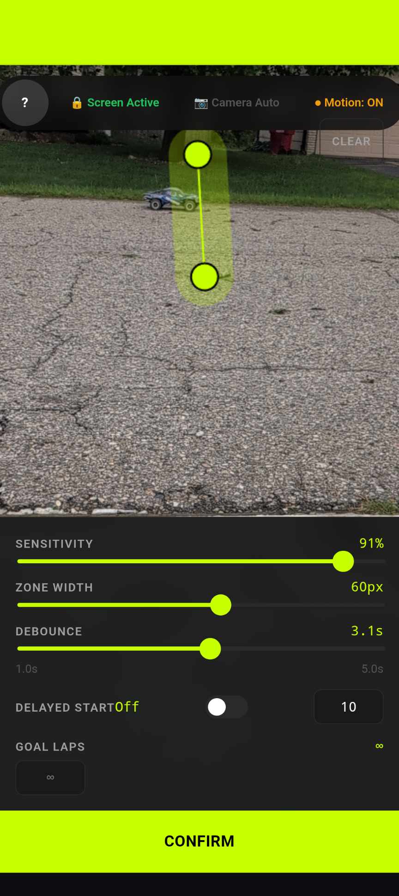
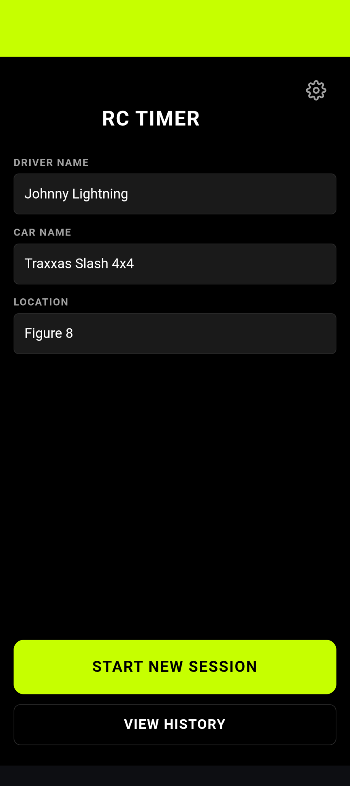
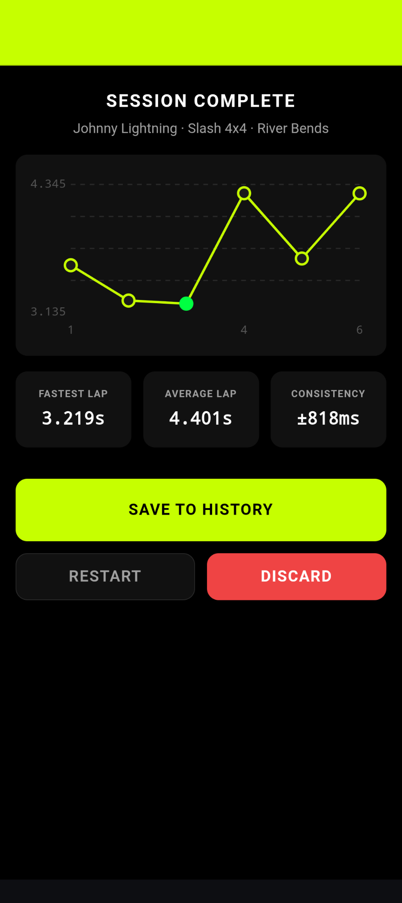
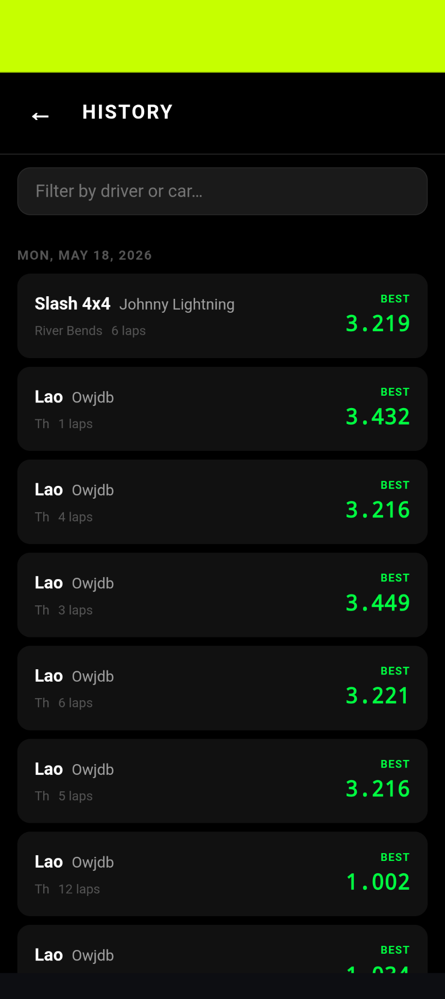

Camera-Based Detection
No hardware needed. Uses your phone's camera to detect every crossing, every lap. Works with any car. (heck, it even works with drones!)
The Free Open-Source RC Lap Timer
No special hardware. No subscription. No Ads. Just point, draw, and race. LapTrack uses your phone's camera to accurately time your laps. Perfect for time trials, solo practice runs, and rally.
No hardware needed. Uses your phone's camera to detect every crossing, every lap. Works with any car. (heck, it even works with drones!)
Draw your detection line directly on a live feed, allowing you to set up your phone at any angle to the Start/Finish line.
Configurable TTS voice announces every lap time the moment your car crosses, keeping you up to date on your performance without taking your eyes off the track.
Full offline support. Letting you practice anywhere, anytime.
Extra-large buttons and high-contrast UI make setup fast and easy. No extra, unnecessary elements to distract you from your race.
Every session saved locally. Review lap tables, charts, and personal bests anytime.
Open the app, aim the camera at your finish line, drag to draw your Trigger Zone on the live feed.

Test sensitivity, adjust trigger line width, and set delay.
Hit Start. Laps are clocked automatically every time your car crosses the Start/Finish line.
LapTrack is a cross-platform installable web app. Install it directly from your browser — no app store, no account, totally free.
Works on any device, any OS, any browser — Open the app →


